mappingControl_SITORO.adl
Screen to control the mapping modes on the Falcon4.

The EPICS dxpSITORO module provides support for the SITORO based digital signal processor based multichannel analyzers from X-ray Instrumentation Associates (XIA). These devices include the FalconXN models, and all contain the functional equivalent of the shaping amplifier, ADC, and MCA of a conventional pulse-height analysis system. The FalconX is based on the SITORO technology from Southern Innovation
dxpSITORO supports the 1, 4, and 8 channel versions of the FalconX.
dxpSITORO currently supports this hardware under the following operating systems and compilers:
The features of the EPICS software, compared with the ProSpect software available from XIA are:
The software consists of the following components:
The overall architecture of the EPICS dxpSITORO software is shown in the diagram below. At the top level are EPICS Channel Access client applications, such as the IDL MCA Display program, the Python Multi-Element Detector control programs, medm, spec, and others.
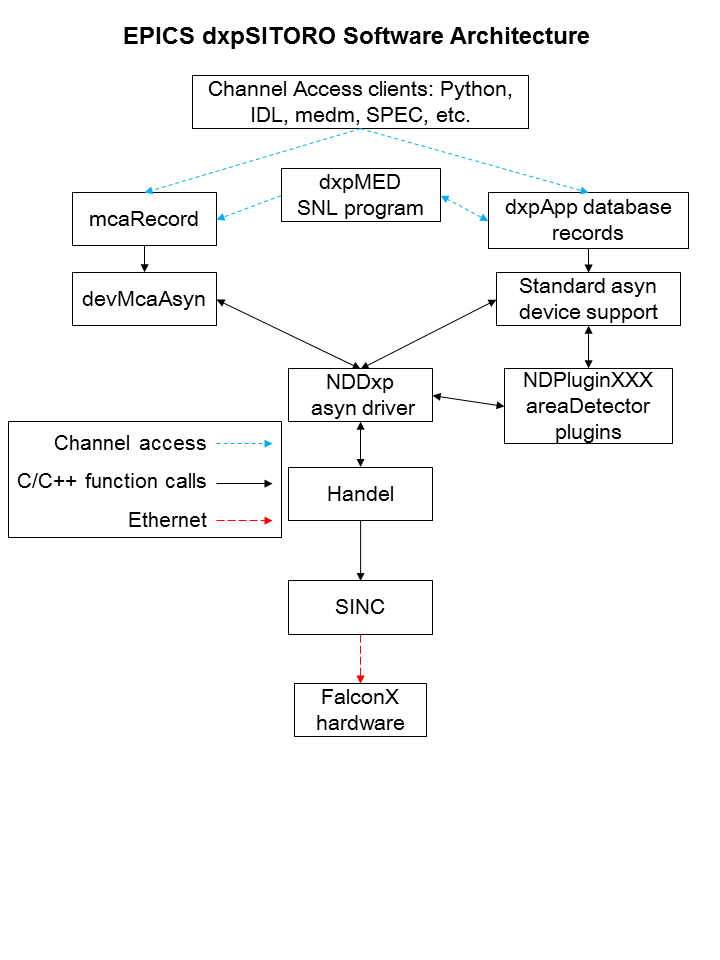
This document does not attempt to explain the meaning or use of all of the FalconX parameters. The best documentation of the operation of the FalconX modules is provided by XIA in the FalconX Quick Start Guide. This also describes the ProSpect software, which is useful to set up and test the hardware.
For many parameters in the following databases there is both an EPICS output record (ao, bo, mbbo, etc.) and a corresponding EPICS input record (ai, bi, mbbi, etc.). The output record is used to set a new value in the hardware. The input record has an _RBV suffix, which stands for Read Back Value. It is used to read back the actual value from the hardware, which may be different from the requested value because of limitations of the hardware, errors, etc.
When the EPICS IOC starts the initial values of the records are set in the following order:
Steps 1-3 apply to both output records and to input records. Steps 4 and 5 typically only apply to output records, and step 7 only to input records. If there is no auto_settings*.sav file then most of the parameter records will obtain their initial values from the .ini file. Thus, by deleting the auto_settings*.sav file one can force EPICS to use the same parameters that have been saved into an .ini file by ProSpect.
The following records are defined in the database dxpHighLevel.template. They control the high-level parameters such as peaking time, etc. One instance of this database is loaded for each detector channel in the system. All of the record names in the template file are preceeded by the macro parameters $(P)$(R), where $(P) is the prefix for this detector system, and $(R) is the name of this specific channel. $(P) should be unique for all EPICS IOCs on the subnet, and $(R) is typically dxp1:, dxp2:, etc.
| Records in dxpHighLevel.template | ||
| Record Name | Record Type | Description |
|---|---|---|
| Detection Records | ||
|
DetectionFilter DetectionFilter_RBV |
mbbo mbbi |
The detection filter type. Choices are:
|
|
DetectionThreshold DetectionThreshold_RBV |
ao ai |
The threshold in keV (?). |
|
MinPulsePairSeparation MinPulsePairSeparation_RBV |
longout longout |
The minimum number of samples between pulses. |
| Pre-amp and Energy Range Records | ||
|
DetectorPolarity DetectorPolarity_RBV |
bo bi |
Pre-amp polarity (not high-voltage polarity). 0=Neg, 1=Pos. Positive polarity means an x-ray pulse causes an increase in the pre-amp voltage output. This is normally defined in the .ini file, but is accessible to EPICS to allow quick determination of the correct polarity. |
|
ResetDelay ResetDelay_RBV |
ao ai |
For reset pre-amps the time in microseconds to recover after a pre-amp reset. |
|
DecayTime DecayTime_RBV |
ao ai |
For RC pre-amps the characteristic decay time in microseconds. |
|
ScaleFactor ScaleFactor_RBV |
ao ai |
Scale factor to control the energy range of the spectra. |
|
RisetimeOptimization RisetimeOptimization_RBV |
ao ai |
Risetime optimization factor for the pre-amp signal. Range is 0 to 4000. |
| Preset Counting Records | ||
|
PresetMode PresetMode_RBV |
mbbo mbbi |
The preset counting mode. The choices are:
|
|
PresetReal PresetReal_RBV |
ao ai |
The real time in seconds count for. |
|
PresetEvents PresetEvents_RBV |
longout longin |
The number of events to count for. |
|
PresetTriggers PresetTriggers_RBV |
longout longin |
The number of triggers to count for. Triggers are x-rays that were processed by the trigger filter, and includes pileups and other events that are not actually present in the spectrum. |
| Counting Statistics Records | ||
| ElapsedRealTime | ai | The elapsed real time. This is the same information as in the .ERTM field of the corresponding MCA record. |
| ElapsedLiveTime | ai | The elapsed live time. This is the same information as in the .ELTM field of the corresponding MCA record. |
| ElapsedTriggerLiveTime | ai | The elapsed live time for the trigger filter. |
| Triggers | longin | The number of trigger filter events. |
| Events | longin | The number of energy filter events. |
| InputCountRate | ai | The input count rate (ICR), which is the same as Triggers/ElapsedTriggerLiveTime. |
| OutputCountRate | ai | The output count rate (OCR), which is the same as Events/ElapsedRealTime. |
| Mapping Records | ||
| CurrentPixel | longin | The current pixel in the mapping run in MCA mapping mode. |
| Diagnostic Trace Records | ||
| TraceData | waveform | The diagnostic trace data. The array is read from the hardware when this record is processed. Note: this record should not be processed while normal data acquisition is in progress or it will slow things down. |
The following records are defined in the databases dxpSCA.template. They control the 16 (FalconX1), 4 (FalconX4) or 2 (FalconX8) single-channel-analyzers (SCAs) for each channel. Each SCA is defined by a low channel and a high channel. The SCA definitions are for hardware ROI mapping. The FalconX puts out a pulse on a TTL output line when an x-ray falls within the channel range of that SCA. This allows very fast mapping, since there is no need to read the spectrum at each point in the scan.
One instance of this database is loaded for each SCA and each detector channel in the system. All of the record names in the template file are preceeded by the macro parameters $(P)$(R), where $(P) is the prefix for this detector system, and $(R) is the name of this specific channel. The macro $(N) is used to define the SCA number.
| Records in dxpSCA.template | ||
| Record Name | Record Type | Description |
|---|---|---|
|
SCA$(N)Low SCA$(N)Low_RBV |
longout longin |
The low channel for SCA $(N). Actual record names are SCA0Low, SCA1Low, etc. |
|
SCA$(N)High SCA$(N)High_RBV |
longout longin |
The high channel for SCA $(N). Actual record names are SCA0High, SCA1High, etc. |
The following records are defined in the database dxpSystem.template. One instance of this database is loaded for each FalconX system, since they control system-wide parameters. All of the record names in the template file are preceeded by the macro parameter $(P), the prefix for this detector system.
| Records in dxpSystem.template | ||
| Record Name | Record Type | Description |
|---|---|---|
| TraceTime | ai | The time per sample in microseconds for the TraceData arrays. |
| TraceTimeArray | waveform | The time values for the trace data. This array is used to provide a calibrated X-axis when plotting the TraceData. |
| MaxSCAs | longin | The maximum number of SCAs that the system supports. |
|
NumSCAs NumSCAs_RBV |
longout longin |
The number of SCAs (ROIs) to use. The records for each SCA are defined in the database dxpSCA.template. |
|
SCATriggerMode SCATriggerMode_RBV |
mboo mbbi |
The SCA trigger mode, which controls when the FalconX outputs SCA pulses. The choices
are:
|
|
SCAPulseDuration SCAPulseDurection_RBV |
longout longin |
The duration (width) of the SCA pulse oututs in ns. |
|
PollTime PollTime_RBV |
bo ao |
The EPICS driver rapidly polls the hardware when acquisition is active to detect when acquisition is complete. This record controls the poll time, which is typically .001 to .01 seconds. Decreasing the time decreases latency at the expense of more CPU time, and there is a minimum time required to poll the hardware. |
| SaveSystemFile | waveform | The name of a file in which to save the system information. This file is created by the XIA Handel software, and is the ".ini" file format used in the call to xiaInit() in the startup script. This file can be used to transfer settings between XIA's ProSpect program and EPICS. This is a waveform record with type DBF_UCHAR and length 256, rather than a stringout record, so that file paths/names longer than 40 characters can be used. Client applications must convert the file name to an unsigned char array when writing to this field. |
|
SaveSystem SaveSystem_RBV |
bo bi |
Writing 1 to this record causes the system information to be written to the file specified by SaveSystemFile. |
| EnableClientWait | bo | This record enables waiting for a client when acquisition completes. It can be used to wait for a client application to save data to disk, etc. |
| SetClientWait | bo | This record sets the ClientWait record to Busy if EnableClientWait is set to Enable. This record is processed by EraseStart and StartAll in the dxpMED.template database. |
| ClientWait | busy | This record forces processing to wait until a client clears it after acquisition starts when EnableClientWait is set to Enable. |
The following records are defined in the database dxpMED.template (MED stands for Multi-Element Detector). One instance of this database is loaded for each system, since they control system-wide parameters. Only the records in this database that are intended for use by EPICS clients are documented here. Records that are not intended to be accessed from clients are not documented, since they may be changed in the future. Records in this database are implemented in several ways. Some are connected to an MCA record that is configured with a special address that signifies that it controls all detector channels. That record communicates directly with the driver. Other records are implemented in a State Notation Language program which monitors the system-wide records like PresetMode, and copies them to the individual detector records.
All of the record names in the template file are preceeded by the macro parameter $(P), the prefix for this detector system.
| Records in dxpMED.template | ||
| Record Name | Record Type | Description |
|---|---|---|
| SNL Status Records | ||
| SNL_Connected | bi | This record will be 1 ("Connected") when the SNL program has connected to all of the PVs. If it is 0 ("Not connected") then there is a problem with the SNL program. |
| Acquisition Control Records | ||
| EraseAll | bo | Writing 1 to this record erases all of the MCA records in this system. |
| EraseStart | bo | Writing 1 to this record erases and starts acquisition on all of the MCA records in this system. In the mapping modes it starts a new mapping run. |
| StartAll | bo | Writing 1 to this record starts acquisition on all of the MCA records in this system without first erasing any existing spectra. In the mapping modes it starts a new mapping run. |
| StopAll | bo | Writing 1 to this record stops acquisition in MCA and mapping modes. |
| Preset Control Records | ||
| PresetMode | mbbo |
The preset counting mode. The choices are:
|
| PresetReal | ao | The preset real time. |
| PresetEvents | longout | The number of events to count for. |
| PresetTriggers | longout | The number of triggers to count for. |
| Status/Statistics Records | ||
| StatusAll | ai | Processing this record causes the status information (Acquiring, ElapsedReal, etc.) to be read. For maximum performance with short count times this record should have .SCAN=Passive. When this record is Passive the status information will still be read once when acquisition completes in normal MCA mode. |
| ReadAll | ai | Processing this record causes the MCA spectra to be read. For maximum performance with short count times this record should have .SCAN=Passive. When this record is Passive the MCA spectra will still be read once when acquisition completes in normal MCA mode. However, in order for the MCA spectra update in the MCA mapping mode this record must be set to periodically process (e.g. "2 second"). |
| Acquiring | bi | Acquisition status, 0=Done, 1=Acquiring. Acquiring will be 1 if any channel is acquiring. |
| MaxElapsedReal | ai | The maximum of the elapsed real time of all system channels. |
| MaxElapsedLive | ai | The maximum of the elapsed live time of all system channels. |
| MaxElapsedTriggerLive | ai | The maximum of the elapsed trigger live time of all system channels. |
| MaxTriggers | ai | The maximum of the triggers of all system channels. |
| MaxEvents | ai | The maximum of the events of all system channels. |
| MaxInputCountRate | ai | The maximum of the input count rate of all system channels. |
| MaxOutputCountRate | ai | The maximum of the output count rate of all system channels. |
| DeadTime | ai | The dead time. This value is the average of the dead time of all system channels. The dead time of each MCA is the cumulative dead time since the MCA was last erased. |
| IDeadTime | ai | The instantaneous dead time. This value is the average of the intantaneous dead time of all system channels. The instantaneous dead time of each MCA is the dead time in the interval since the MCA status was last read. |
| High-Level Parameter Records | ||
| CopyDetectionThreshold | bo | Writing 1 to this record copies the DetectionThreshold from channel 1 to all channels. |
| CopyMinPulsePairSeparation | bo | Writing 1 to this record copies the MinPulsePairSeparation from channel 1 to all channels. |
| CopyDetectionFiler | bo | Writing 1 to this record copies the DetectionFilter from channel 1 to all channels. |
| CopyScaleFactor | bo | Writing 1 to this record copies the ScaleFactor from channel 1 to all channels. |
| CopyRisetimeOptimization | bo | Writing 1 to this record copies the RisetimeOptimization from channel 1 to all channels. |
| CopyDetectorPolarity | bo | Writing 1 to this record copies the DetectorPolarity from channel 1 to all channels. |
| CopyResetDelay | bo | Writing 1 to this record copies the ResetDelay from channel 1 to all channels. |
| CopyDecayTime | bo | Writing 1 to this record copies the DecayTime from channel 1 to all channels. |
| CopyResetDelay | bo | Writing 1 to this record copies the ResetDelay from channel 1 to all channels. |
| CopyDecayTime | bo | Writing 1 to this record copies the DecayTime from channel 1 to all channels. |
| ReadTraces | bo | Writing 1 to this record reads the TraceData for all channels. Note: this record should be set to Passive during normal data acquisition, or it will slow things down. |
| ROI and SCA Records | ||
| CopyROIChannel | bo | Writing 1 to this record copies all ROIs from channel 1 to all channels on a channel-by-channel basis. |
| CopyROIEnergy | bo | Writing 1 to this record copies all ROIs from channel 1 to all channels on an energy-by-energy basis, i.e. using the energy calibration information for each MCA. |
| CopyROI_SCA | bo | Writing 1 to this record copies every ROI for every channel to the corresponding SCA. |
The following records are defined in the database dxpMapping.template. One instance of this database is loaded for a FalconX system, since they control system-wide mapping parameters.
This document does not attempt to explain the mapping mode features of the FalconX that these records control. The user should read the FalconX mapping document to understand the mapping features. Note that the document says that list mode mapping is supported, but this is not yet the case, currently only MCA mapping is supported by the XIA Handel library.
All of the record names in the template file are preceeded by the macro parameter $(P), the prefix for this detector system.
| Records in dxpMapping.template | ||
| Record Name | Record Type | Description |
|---|---|---|
| Mapping Mode Control Records | ||
|
CollectMode CollectMode_RBV |
mbbo mbbi |
Selects the collection mode for the system. The choices are:
|
|
NDArrayMode NDArrayMode_RBV |
mbbo mbbi |
Selects how the mapping data is stored in NDArrays, and thus the structure of the
data when written to disk. The choices are:
|
|
PixelAdvanceMode PixelAdvanceMode_RBV |
mbbo mbbi |
Selects the pixel advance mode for system. The choices are:
|
| NextPixel | bo | Writing 1 to this record causes the system to advance to the next pixel in MCA mapping mode. This is a "software" pixel advance, and can be issued any time mapping mode acquisition is in progress, regardless of the setting of PixelAdvanceMode. |
|
PixelsPerRun PixelsPerRun_RBV |
longout longin |
The total number of pixels to acquire in one "run" when acquisition starts. If this value is -1 then there is no preset number of pixels, and acquisition will continue forever until it is stopped manually with StopAll. |
|
PixelsPerBuffer PixelsPerBuffer_RBV |
longout longin |
The number of pixels per buffer. If AutoPixelsPerBuffer=Manual, then this value is used, rather than using the maximum possible value computed when AutoPixelsPerBuffer=Auto. The main reason to set this value manually is that the updates to statistics and MCA displays in mapping mode happen only when a buffer is read out. If the time per pixel is relatively long then decreasing PixelsPerBuffer will result in more frequent updates of the MCA and statistics displays. Setting this value too low when doing rapid mapping can result in buffer overflow. PixelsPerBuffer_RBV always contains the actual number of pixels per buffer. |
|
AutoPixelsPerBuffer AutoPixelsPerBuffer_RBV |
mbbo mbbi |
Flag controlling how the number of pixels per buffer is determined. Choices are 0=Manual and 1=Auto. If Manual is selected then the number of pixels per buffer is controlled by the PixelsPerBuffer record. If Auto is selected then the maximum number of pixels that the mapping buffer can hold is automatically computed. |
| BufferSize_RBV | longin | The size of the buffer being used in units of 32-bit words. This will be the first dimension of the array passed to the plugins when a buffer is read out. The maximum value is 4456704 but it can be less than this depending on the value of PixelsPerBuffer_RBV. |
|
IgnoreGate IgnoreGate_RBV |
mbbo mbbi |
Flag controlling whether the Gate input signal is used to inhibit counting. Choices are 0=No and 1=Yes. If IgnoreGate=Yes then the Gate input can be used as a pixel advance signal, but its high or low state will not influence whether counting is enabled, i.e. only the transitions are significant. If IgnoreGate=No then counting will be inhibited when the Gate input is low (if InputLogicPolarity=Normal) or high (if InputLogicPolarity=Inverted). NOTE: Although this record is in dxpMapping.template with recent FalconX firmware IgnoreGate also controls the behavior of the gate input in normal MCA mode, not only in mapping mode. |
|
InputLogicPolarity InputLogicPolarity_RBV |
mbbo mbbi |
Flag controlling the polarity of the Gate input signal. Choices are 0=Normal, 1=Inverted. In Normal mode a low level on the Gate input inhibits counting (if IgnoreGate=No) and a high-to-low transition performs a pixel advance (if PixelAdvanceMode=Gate). In Inverted mode these levels are the opposite, i.e. a high level inhibits counting and a low-to-high transition performs a pixel advance. NOTE: Although this record is in dxpMapping.template with recent FalconX firmware InputLogicPolarity also controls the behavior of the gate input in normal MCA mode, not only in mapping mode. |
|
SyncCount SyncCount_RBV |
longout longin |
The divisor used on the Gate input for pixel advance if PixelAdvanceMode=Gate. This value can be used to divide the Gate clock. For example, if the Gate input were connected to the pulse output of a stepper motor controller, then setting SyncCount=10 would perform a pixel advance on every 10'th stepper motor pulse. SyncCount=1 results in no clock division, i.e. every Sync input pulse results in a pixel advance. |
| ReadRate_RBV | ai | The burst read rate in MBytes/s measured when reading the mapping data from each module. |
| MBytesRead_RBV | ai | The total number of MBytes of mapping data read from all modules since the IOC started. |
In the mapping mode data are collected into a double-buffered memory on the module. When one half of the buffer memory is full the EPICS driver reads the data from that buffer and converts it into an NDArray object. If NDArrayMode=Raw buffers then there is no conversion of the buffer when it is copied to the NDArray. If NDArrayMode=MCA spectra then the buffer is unpacked into an NDArray of dimensions [numMCAChannels, numDetectors]. The driver then calls any registered plugins with that NDArray. The plugins will typically be one of the NDPluginFile plugins which will write the data to disk. The useful file plugins can write the data in netCDF, NeXus/HDF5, and TIFF formats. The JPEG plugin will not be useful, because the data are not images. The data can also be passed to the NDPluginStdArrays plugin which can make the data available to EPICS channel access clients as waveform records.
When NDArrayMode=Raw buffers the data in each NDArray object is a 32-bit unsigned integer array with dimensions [BufferSize, NumDetectors]. BufferSize is the size of the double-buffered memory in use, which is controlled by the AutoPixelsPerBuffer and PixelsPerBuffer records. It has a maximum value of 4456704 but can be smaller than this. In MCA mapping mode the buffer for each module in this array contains the data for each pixel, including the elapsed live and real time, triggers and events, and the MCA data. In List mapping mode the buffer will contain the event data for each x-ray event. The details of the buffer structure are beyond the scope of this document, but the buffer structure is thoroughly described in the FalconX mapping document.
To collect mapping mode data one would typically execute the following steps:
Data acquisition in mapping mode is very flexible. When doing a 2-D map, for example, one could stream the data for the entire map into a single large netCDF file. Alternatively, one could save just a single scan row into each file, and restart the file plugin for each row, using a new file name, or auto-increment on the file number. Data can be saved into HDF5, NeXus, netCDF or TIFF files.
There are IDL functions available in the CARS IDL detector package to conveniently extract the mapping mode data from netCDF files produced with the netCDF plugin. read_nd_netcdf.pro reads the data from a netCDF file written by the areaDetector NDFileNetCDF plugin. If raw buffers were written to the file then decode_falcon_buffers.pro can be used to decode the data.
The following are screen shots of the medm screens for the FalconX.
Top-level screen to load the main control screens for the example IOCs.
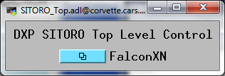
Main screen for Falcon4.
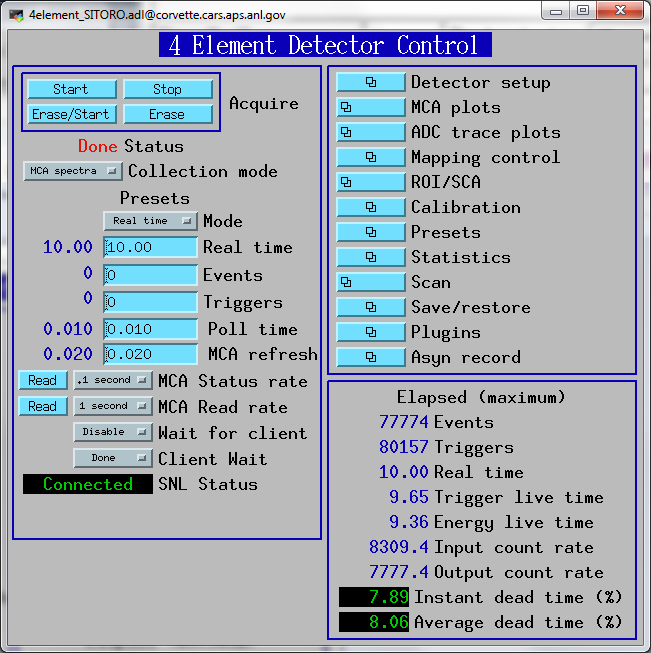
Detector setup screen for Falcon4.
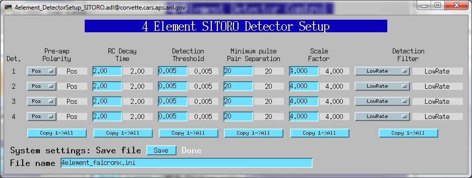
Screen showing all 4 MCA spectra for the Falcon4.
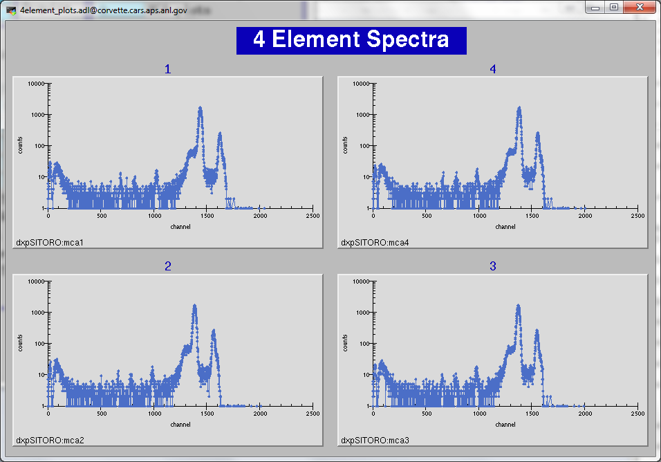
Single detector MCA display screen for Falcon4.
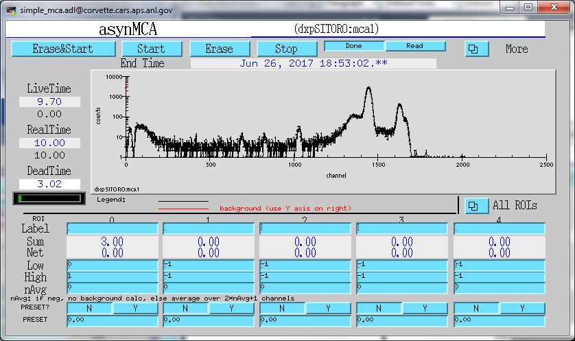
Screen showing all 4 ADC trace plots for Falcon4.
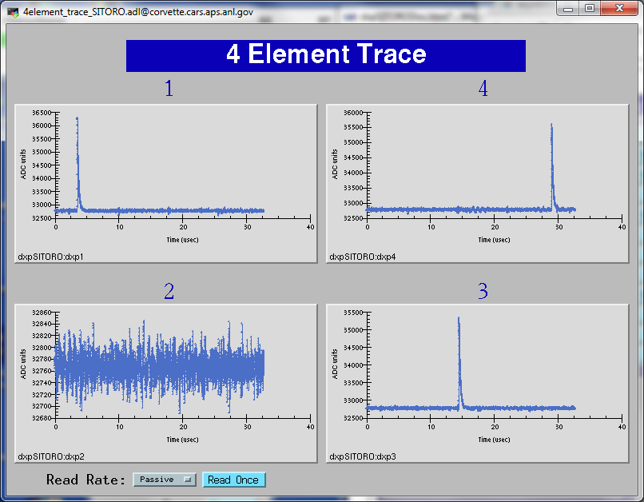
Screen showing ADC trace plot for a single channel on the Falcon4.
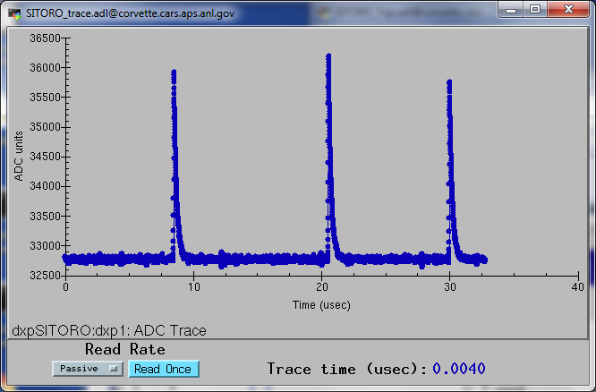
Screen to display ROI and SCA for a single ROI/SCA on each channel of the Falcon4.
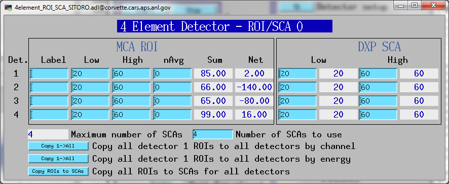
Screen to display calibration parameters for each channel on the Falcon4.
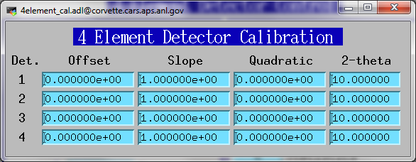
Screen to control the preset parameters for each channel on the Falcon4.
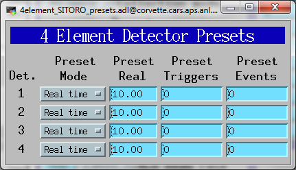
Screen to display the elapsed statistics for each channel on the Falcon4.
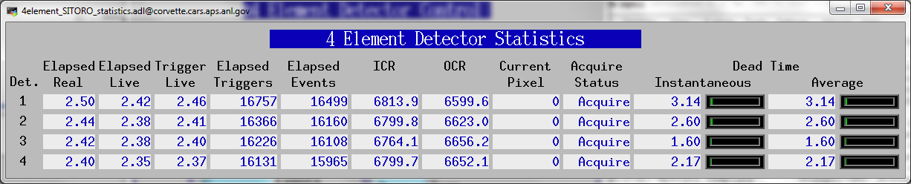
Screen to control the mapping modes on the Falcon4.
Screen to control the HDF5 plugin for saving mapping mode data on the Falcon4.
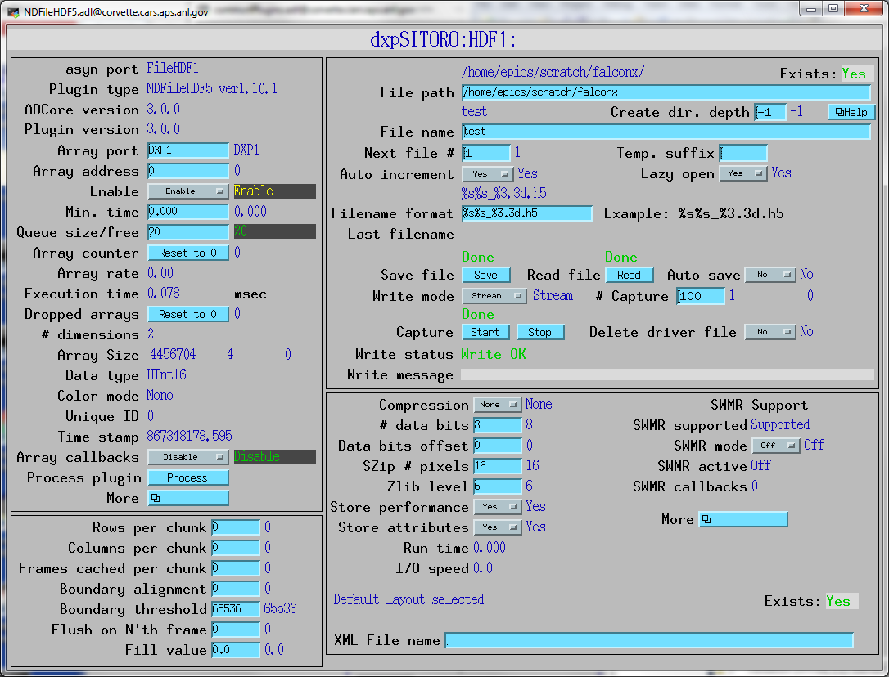
To install the dxpSITORO software first decide whether you want to build the software from source code, or install the pre-built binaries. The Windows binaries should run on almost any version of Windows. The Linux binaries are normally built with Redhat RHEL7, but builds for other Linux versions can be provides on request.
Building from the source code requires downloading EPICS base and all of the required synApps components, including areaDetector/ADCore and ADSupport. To build from source code on Windows requires Microsoft Visual Studio 2015 or later, plus perl and GNU make. It is beyond the scope of this document to describe how to build the source code. Consult other EPICS documentation for this.
The dxpSITORO software provides example IOC directory, iocBoot/FalconX. This create EPICS process variables with names like dxpSITORO:dxp1:DetectorPolarity, where dxpSITORO is the "prefix" for the process variable names, dxp1 is for the first detector channel, and DetectorPolarity is the parameter being controller. This prefix would be OK for installations where there will be at most one FalconX on the subnet. However, in many cases there will be the possibility of more than one FalconX module running EPICS on the same subnet. If this is the case then it is essential that each one use a different prefix, because EPICS process variable names must be unique on a subnet. The following is how to give your IOC a unique prefix, and still be able to upgrade the EPICS software easily. It is recommended that you follow these instructions even if you don't have name conflicts on your subnet, so that files you edit are in a directory that will not be overwritten when you upgrade the EPICS software.
The dxpSITORO application uses the EPICS save/restore facility. This means that all of the important parameters that you might change when running the software are saved in files in the subdirectory called autosave/ under your IOC directory. These parameters include the peaking time, the update rates for displays and many other parameters. The next time EPICS is started it will restore these values automatically from the file called autosave/auto_settings4.sav. It is a good idea to make copies of this file from time to time so that you can get back to old settings if the file is lost or corrupted.
Even if the EPICS IOC will be run on Linux it is advisable to install have a Windows PC on which you should install the latest version of the Prospect software from XIA. ProSpect is needed to "characterize" the detector, which measures the pulse shape from each detector element and derives a model to fit the shape. ProSpect can also run a Configuration Wizard that will create an initial .ini file with the correct settings for your system. You can copy that file to the iocFalconX directory or edit the falconxn4.ini file there. It is useful to have ProSpect available on the computer to compare with the EPICS software.
Copy all of the medm .adl files into a single directory. This is simpler than defining EPICS_DISPLAY_PATH to point to all of the required directories. For example, if you decide to put the .adl files in ./epics_adls, and if you unpacked the synApps modules include areaDetector into ./epics/support and unpacked the dxpSITORO distribution into ./epics/support/dxpSITORO then type the following commands at the Linux or Cygwin bash shell prompt:
$ mkdir ./epics_adls
$ find ./epics/support -name '*.adl' -exec cp -f -p -v {} ./epics_adls \;
Define the environment variable EPICS_DISPLAY_PATH to point to this epics_adls directory. For the Windows shell use the Windows Control Panel/System/Advanced/Environment Variables.
If you installed pre-built binaries, rather than building from source, then edit the envPaths file in iocBoot/iocFalconX. Change the paths to the locations of the directories on your system. Don't worry about the path for directories that don't exist, like SNCSEQ, EPICS_BASE, etc.